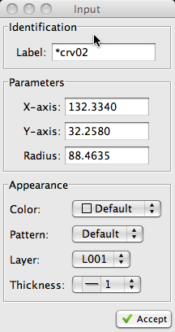

Step 1 of 2:
Select curve or center
point of the circle
curve or center
point of the circle
curve or center
point of the circle|
Step 1 of 2:
Select
curve or center
point of the circle |
 an existing circle an existing point
an existing circle an existing point a new point (free hand)
a new point (free hand) the coordinates
the coordinates|
Step 2 of 2:
Drag
to shrink/enlarge or
Select the outer
point of the circle |
an existing offset point a new offset point (free hand) the circle to the appropriate size (free hand) the radius| The Input Dialog (pictured right) may be used to modify any of
attributes of the circle prior to creating it. These attributes include the layer, color, line pattern, or line thickness. |
 |